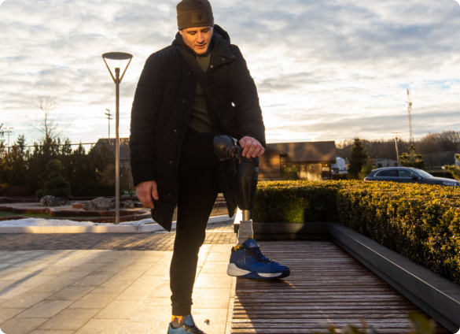
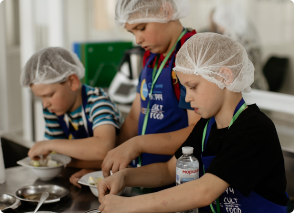
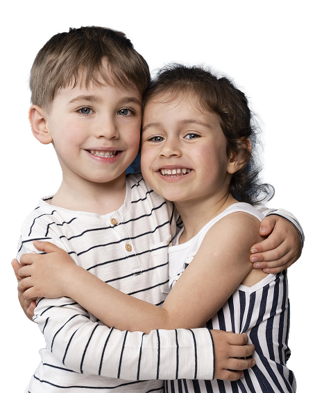

Кожен, хто звернеться, отримає допомогу, яка у наших силах
Ми допомагаємо людям, які постраждали знайти правильне лікування. У нашому фонді є чотири напрями: фізичної та реабілітаційної медицини, терапевтичне, неврологічне та хірургічне. Ми маємо заклади-партнери, де швидко та якісно можуть надати допомогу.

Діти – найвразливіша частина суспільства, і їм особливо потрібна підтримка дорослих. Тому наш фонд збирає речі для дітей, проводить літні й зимові табори, майстер-класи та за потреби – дитячих психотерапевтів.


Наша місія – щоб кожен українець мав можливість отримати допомогу й не залишився наодинці зі своїми проблемами

Усі ваші донати йдуть саме на роботу фонду, заробітні плати ми виплачуємо з коштів грантодавців
Якщо у вас виникають питання – телефонуйте за номером
0-987-654-321
Або пишіть нам у чат-бот